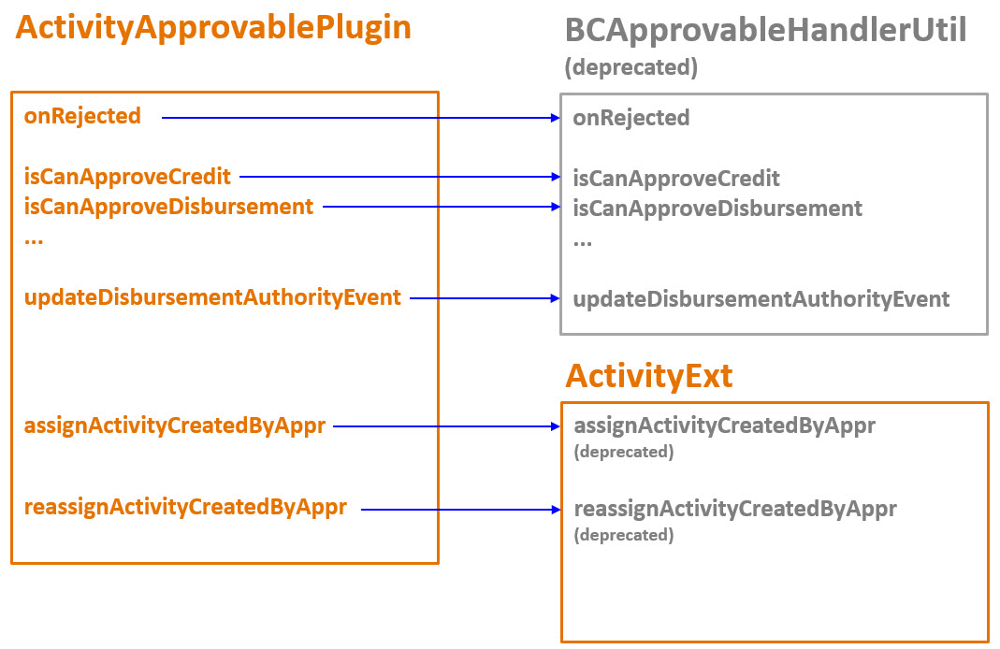

New in the application in 10.0.0
Homeowners line of business
Homeowners insurance provides protection against the financial consequences of losses related to owning and renting a home. A homeowners policy is a combination of property and liability coverages.
The homeowners line is new in this release.
See also
Smart Communications for PolicyCenter
Smart Communications for PolicyCenter integrates with SmartCOMM and enables you to create and edit documents in the GenericCenter user interface and in bulk using SmartCOMM templates. In the base configuration, the integration produces documents in PDF format. Through configuration, you can add support for other channels such as HTML and email. This integration requires that you have Smart Communications SmartCOMM product. The integration does not include any SmartCOMM templates. You must create and configure templates to work with the integration. You must purchase and license SmartCOMM separately. The integration uses a subset of SmartCOMM features.
See also
New in quoting and rating performance
There are several improvements to quoting and rating performance in this release.
See also
Asynchronous quoting
In certain lines of business, generating quotes for policies can take a noticeable amount of time. For example, this can occur on commercial policies with large numbers of coverables. Asynchronous quoting enables the quote to run in the background, so that the user can do work on other screens until the quote completes. Asynchronous quoting occurs when the number of coverables exceeds a threshold. In the base configuration, asynchronous quoting is available in the commercial lines of business: businessowners, commercial auto, commercial property, general liability, inland marine, and workers’ compensation.
Two-step quoting
With two-step quoting, the first step validates the policy data and rates the policy, generating all cost and premium information, and bringing the policy period to Rated status. The second step completes post-rating tasks, such as generating forms, checking reinsurance, and raising underwriting issues. If the second step is successful, the policy period is then in Quoted status. With two-step quoting, you can delay or omit the second step entirely. For example, when working with multiple versions of a policy transaction, an underwriter does not need to generate forms, reinsurance, or underwriting issues for the policy until a specific version is chosen. Or in high volume quoting, only the actual price of the policy is relevant so it is unnecessary to do post-rating tasks. In the base configuration, two-step quoting is enabled for the commercial property line of business, but can easily be enabled for the remaining lines. Side-by-side quoting in personal auto uses two-step quoting. High volume quote requests use two-step quoting for all lines of business.
Parallel rating
Parallel rating can improve the performance of generating quotes on policies with large numbers of coverables by rating coverables in parallel using multiple threads. The implementation requires Guidewire Rating Management. The base configuration implementations of parallel rating for the commercial property line of business. Two types of parallel rating are provided: parallel rating using entities and parallel rating using DTOs.Parallel product model synchronization
Parallel product model synchronization improves the performance of generating quotes by synchronizing the product model in parallel using multiple threads. Product model synchronization occurs at other times in the policy transaction so it can also improve performance outside the quote process. In the base configuration, parallel product model synchronization is enabled for commercial products.
Reinstatement from pre-cancellation invoicing terms
Reinstatement from pre-cancellation invoicing terms overview
In some situations, billing clerks make manual modifications to a policy's invoices. For example, they could do any of the following:
- Change the bill date and/or due date of one or more future invoices
- Change invoice amounts by moving invoice items to different invoices
- Create new ad hoc invoices and move invoice items to them
In previous releases, reinstatement charges are always sliced by the payment plan charge slicer. This charge slicer has no knowledge of modifications made to the invoices prior to cancellation. Therefore, if a policy with modified invoices is canceled and then reinstated, all of the invoice modifications are lost.
As of this release, BillingCenter includes a new feature known as reinstatement from pre-cancellation invoicing terms. When a policy is canceled, BillingCenter first creates a set of cancellation snapshots, one for each planned invoice item on the policy. These snapshots contain information from the invoice item (such as its amount), the invoice it is on (such as the due date), and the related charge (such as the charge pattern). This release also includes a new Match Cancellation Snapshots Charge Slicer. If the canceled policy is reinstated, the Match Cancellation Snapshots Charge Slicer uses these snapshots to restore the planned invoices to a state that is as close to their original state as possible.
Cancellation snapshots can be enabled or disabled. In the base configuration, the feature is enabled.
Learning about reinstatement from pre-cancellation invoicing terms
For a detailed discussion of the business functionality of reinstatement from pre-cancellation invoicing terms, refer to the reinstatements topic in the Application Guide.
For a detailed discussion of the configuration functionality of reinstatement from pre-cancellation invoicing terms, refer to the Configuring Reinstatements topic in the Configuration Guide.
Reinstatement from pre-cancellation invoicing terms and upgrades
Review previous configuration code
As of this release, the base configuration behavior is:
- To take cancellation snapshots of a policy's invoice items when the policy is canceled
- To attempt to use these cancellation snapshots if the policy is later reinstated
As a result, the invoice items created during a reinstatement may not match the ones created in previous releases. Guidewire recommends that you review and refactor any configuration code you added to modify reinstatement charge slicing.
When will policies be reinstated using cancellation snapshots
It is possible for a policy to be canceled before or after an upgrade and reinstated before or after the upgrade. This section describes how BillingCenter executes reinstatements for each scenario.
Policies that are canceled before the upgrade do not have cancellation snapshots. If these policies are upgraded and then reinstated, there will still be no cancellation snapshots. Whenever a policy is reinstated and there are no cancellation snapshots (and the Collapse Future Invoices for Cancellation behavior is enabled), BillingCenter slices the reinstatement charges using the Payment Plan charge slicer.
| Canceled when? | Reinstated when? | Charge slicer used during reinstatement |
| Prior to the upgrade | Prior to the upgrade | Payment Plan Charge Slicer |
| Prior to the upgrade | After the upgrade | Payment Plan Charge Slicer |
| After the upgrade | After the upgrade | Match Cancellation Snapshots Charge Slicer |
Flat amount commission overrides
Flat amount commission overrides overview
Every policy that earns commission is associated with a commission plan. BillingCenter uses the commission plan's commission rate to determine a default commission value. However, this value can be overridden.
Prior to BillingCenter 9.0.2, the only type of override available is a commission rate override. Commission rate overrides can be created using Gosu or through the user interface.
As of BillingCenter 9.0.2, two types of overrides are available: commission rate overrides and flat amount commission overrides. However, flat amount commission overrides can only be created using Gosu.
As of this release, there are still two types of overrides: commission rate overrides and flat amount commission overrides. Now, both can be created through Gosu or through the user interface.
Learning about flat amount commission overrides
For a detailed discussion of the business functionality of flat amount commission override (including how to create them in the user interface), refer to the commission topic in the Application Guide.
For a detailed discussion of the configuration functionality of flat amount commission overrides, refer to the Configuring Commission topic in the Configuration Guide.
Flat amount commission overrides and upgrades
Data model and Gosu support for flat amount commissions are not new as of this release. However, user interface support is new as of this release.
The feature is implemented using only minor chages to the data model, Gosu layer, and PCF files. The changes to existing files are minimal and are addressed by the normal upgrade process.
Multiple currencies per plan
Multiple currencies per plan overview
There are five plans in BillingCenter that store MonetaryAmount values:
- Agency bill plan
- Billing plan
- Commission plan
- Delinquency plan
- Payment plan
In previous releases, every instance of a plan can have only a single currency. When multicurrency is enabled, this means that every instance of a plan is assigned to a single currency silo, even if the MonetaryAmount values are zero or null. A multicurrency insurer may want to use a given plan for multiple accounts, policies, or producers across multiple currency silos. However, because of currency silo restrictions, there is no way to do this. These insurers needed to create multiple plans that are identical except for the currency.
As of this release, the five plans listed above have been moved out of the currency silos. If an insurer has enabled multicurrency, a given instance of these plans can support multiple currencies and can be assigned to multiple accounts, policies, or producers across multiple currency silos. These plans are collectively referred to as the multicurrency plans.
In previous releases, the MonetaryAmount values on these plans were stored as individual fields. As of this release, the MonetaryAmount values are stored as arrays. This gives a plan the ability to have multiple values in different currencies for a given monetary amount. For example, the billing plan's Low Balance Threshold was previously a single field. Now, it is an array that can have a value in US Dollars, a value in Canadian Dollars, a value in Euros, and so on.
Note that there are two plans that are not multicurrency plans: payment allocation plans and return premium plans. These plans do not store any MonetaryAmount values. In both previous releases and the current release, they are not assigned to currency silos. Accounts in different currency silos can still use the same payment allocation plan and/or return premium plan.
Learning about multiple currencies per plan
For a detailed discussion of the business functionality of multiple currencies per plan, refer to the multicurrency topic in the Application Guide.
For a detailed discussion of the configuration functionality of multiple currencies per plan, refer to the Configuring Multicurrency topic in the Configuration Guide.
Multiple currencies per plan and upgrades
Conversion of existing plans
As of the current release, the MonetaryAmount values for all plans are stored as arrays. This is true whether a given instance of BillingCenter is in single-currency mode or multicurrency mode.
During the upgrade process, all existing mono-currency plans are converted to multicurrency plans whose MonetaryAmount arrays each have a single member. For example, suppose there is a Western Region Billing Plan that previously had a Low Balance Threshold of 25 US Dollars. In the previous release, this value was stored in the plan's LowBalanceThreshold field. After the upgrade, this value is stored as the only member of the plan's LowBalanceThresholdDefaults array.
Multicurrency insurers who want to take advantage of multicurrency plans will need to create new multicurrency plans, expire the existing mono-currency plans, and then transfer accounts, policies, and/or producers to the new multicurrency plans as needed.
Special upgrade behavior for billing plans
In previous releases, almost all of the MonetaryAmount fields on Plan entities have one of two behaviors:
- The value is not required and there is no default value.
- The value is required and there is a default value of zero.
There are only two exceptions to this. Both are on the BillingPlan entity.
- The DisbursementOver field - This field determines the threshold amount that must be available in an unapplied fund before BillingCenter will create an automatic disbursement. In previous releases, this field is required, but there is no default value.
- The ReviewDisbursementOver field - This field determines the threshold amount for when approval is required. In previous releases, this field is not required, but there is a default value of 0.
As of this release, MonetaryAmount values in plans are stored as arrays. There is no simple way to have an array of values be required without providing a default value for the members of the array. There is also no simple way to provide a default value for the members of the array and not have the array of values be required. Therefore, the behavior of these MonetaryAmount fields have changed. As of this release, both the DisbursementOver field and the ReviewDisbursementOver field are required and have a default value of zero. From a technical perspective, this means that both the DisbursementOverDefault entity and the ReviewDisbursementOver entity implement the RequiredDefaultZeroFeeThresholdDefault delegate.
During the upgrade process, existing billing plans are converted to the current release with this new behavior. Where necessary, null values are replaced with 0. This does result in a minor change in application functionality.
Also, as part of an unrelated change, the user interface label for the field has changed. In previous releases, the base configuration label was Review Disbursements Over. As of this release, the base configuration label is Creation Threshold. For more information on the label changes made to improve the end user experience, see Improved labeling.
Multicurrency plan consistency checks
There are new consistency checks dedicated to multicurrency plans. These checks ensure that:
- Every multicurrency plan has at least one currency.
- For a given MonetaryAmount value, there is one FeeThresholdDefault for each currency the plan supports.
- For a given MonetaryAmount value, there is no FeeThresholdDefault for any currency the plan does not support.
API changes related to multicurrency plans
In previous releases, fee and threshold fields on plans had the following getter and setter:
- getFeeThresholdAmount()
- setFeeThresholdAmount(MonetaryAmount)
As of this release, these methods have been renamed. Also, they now require a currency input:
- getFeeThreshold(Currency)
-
setFeeThreshold(Currency, MonetaryAmount)
- When using this method, BillingCenter automatically creates a FeeThresholdDefault object for the given currency. There is no need to manipulate the array manually.
Insurers will need to change configuration code to use the new method signatures.
Charge invoicing improvements
Making invoice items billed and due today
Under normal circumstances, a given invoice
item is assigned to the first chronological invoice whose bill date is
on or after the invoice item’s event date. However, there may be circumstances
when you want a given invoice item to be billed earlier than this. To
provide greater control over when an invoice item is billed, every Entry object has an InvoiceDateOverride typekey field.
This field can be sent to bill today,
bill on item event date, or due on item event date. For more information,
see Overriding which invoice an invoice item is assigned to.
As of this release, there is an additional option, bill and due today. When selected, the invoice item is assigned to the invoice whose bill date and due date matches the current date. If there is no invoice with a bill date and a due date of the current date, BillingCenter:
- Creates a new invoice
- Sets the bill date and due date of this invoice to the current date
- Places the invoice item on this invoice.
To set an Entry
to be billed and due today, use the entity's billDueToday method. The following
is an example of setting an Entry
to be billed and due today if its amount is greater than 500.
if (entry.getAmount().Amount > 500) {
entry.billDueToday()
}You can also explicitly set the Entry setInvoiceDateOverride field to
TC_BILLDUETODAY. The following
is an example. It is logically equivalent to the previous example.
if (entry.getAmount().Amount > 500) {
entry.setInvoiceDateOverride(InvoiceDateOverride.TC_BILLDUETODAY)
}The Entry
entity also has an isBillDueToday
method that returns true if the Entry.InvoiceDateOverride field is set to TC_BILLDUETODAY.
Gosu methods that can enhance billing instruction APIs
In this release, there are new methods on the Policy entity that interact with the policy's invoice stream:
void updateBillDateOrDueDateBillingOnDefaultInvoiceStream(BillDateOrDueDateBilling billDateOrDueDateBilling)- Registers the due date billing on a policy's default invoice stream.
void updateDescriptionOnDefaultInvoiceStream(String description)- Registers the overriding description instrument on a policy's default invoice stream.
void updateOverridingAnchorDatesOnDefaultInvoiceStream(List<AnchorDate> anchorDates)- Registers the overriding anchor dates on a policy's default invoice stream.
void updateOverridingLeadTimeOnDefaultInvoiceStream(Integer leadTimeInDays)- Registers the overriding lead time (in days) on a policy's default invoice stream.
void updateOverridingPaymentInstrumentOnDefaultInvoiceStream(PaymentInstrument paymentInstrument)- Registers the overriding payment instrument on a policy's default invoice stream.
These methods are designed to be used only in bundles
where the policy is new. These methods throw an IllegalStateException if they
are used in a bundle where the policy is not new.
The IActivityApprovablePlugin plugin
The IActivityApprovablePlugin plugin overview
An approvable transaction is a financial object that an end user can create manually but that BillingCenter will not process until the object has been approved. There are 13 types of approvable transactions in BillingCenter:
- Advance commission payment
- Bonus commission payment
- Charge reversal
- Credit and credit reversal
- Disbursement
- Funds transfer and funds transfer reversal
- Negative write-off and negative write-off reversal
- Producer payable transfer
- Write-off and write-off reversal.
Existing methods moved to the IActivityApprovablePlugin plugin
There are several configurable methods that affect the processing of approvable transactions:
- Methods originally declared in the BCApprovalHandlerUtil class:
- onRejected - This method determines the actions to take when an approval activity is rejected in addition to the discarding of the associated approvable transaction object.
- The isCanApprove approval handlers - These methods specify any logic to execute to determine if the approvable transaction requires approval.
- updateDisbursementAuthorityEvent - This method provides the ability to make modifications to a newly created AuthorityEvent, such as setting the User if it has not been set.
- Methods originally declared in the ActivityExt extension:
- assignActivityCreatedByAppr - This method determines which user a newly created approval activity is assigned to.
- reassignActivityCreatedByAppr - This method is called by the Automatic Disbursement batch process when an automatic disbursement requires approval, the amount of an automatic disbursement is being increased, and the current approver lacks sufficient authority to approve the new disbursement amount. The method determines which user to reassign the approval activity to.
In previous releases, BillingCenter internal code calls these methods directly. This can cause problems because the methods are declared in editable classes. If an insurer modifies the method names or removes the methods, BillingCenter throws a run-time exception.
As of this release, there is a new IActivityApprovablePlugin plugin. All of the methods listed above are now a part of this plugin. In the base configuration, the plugin is implemented by the ActivityApprovablePlugin class in the gw.plugin.approval.impl package. The base configuration implementation simply calls the methods in the BCApprovalHandlerUtil class and the ActivityExt extension. This is illustrated in the following diagram.

New methods in the IActivityApprovablePlugin plugin
When an approval activity is rejected, a notification activity is sent to the user who requested the associated approvable transaction. In previous releases, this is the only action executed by the base configuration when an activity was rejected.
As of this release, the base configuration takes two actions when an approval activity is rejected:
- It still creates a notification activity for the user who requested the associated approvable transaction.
- It also creates a history event for the associated account to identify that the approvable transaction was rejected.
The new history events make it possible to view both approved and rejected transactions at the account level.
The history events are created by a set of methods in the IActivityApprovablePlugin plugin. All of these methods have names that start with addHistoryEventForRejected, such as addHistoryEventForRejectedDisbursement. There is one method for each type of approvable transaction.
Learning about the IActivityApprovablePlugin plugin
For a detailed discussion of the configuration functionality of the IActivityApprovablePlugin plugin, refer to the Configuring Approvable Transactions topic in the Configuration Guide.
The IActivityApprovablePlugin plugin and upgrades
Deprecated classes and methods
The BCApprovalHandlerUtil class and all of its methods have been deprecated. Also, the two assignment methods in the ActivityExt extension have been deprecated. (The ActivityExt extension has not been deprecated because it also contains methods that are unrelated to approvable transactions.)
In future releases, Guidewire may remove the BCApprovalHandlerUtil class and the assignment methods in the ActivityExt extension. Guidewire recommends the following actions:
- If you have configured the methods in the BCApprovalHandlerUtil class or the ActivityExt extension, migrate the configurations to the ActivityApprovablePlugin class (or to a new class that implements the IActivityApprovablePlugin plugin).
- If you need to add new configurations to these methods, add them to the ActivityApprovablePlugin class (or to a new class that implements the IActivityApprovablePlugin plugin).
Modifying or disabling history events for rejected transactions
If you want to configure the nature of the history event created for a given type of approvable transaction, you can modify the corresponding addHistoryEventForRejected method.
If you do not want a history event to be created for a given type of approvable transaction, you can replace the corresponding addHistoryEventForRejected method with an empty method.
Batch payments
Batch payments overview
A batch payment is a collection of individual payments that are entered and executed as a group. End users can use batch payments to manually enter multiple payments, such as a set of payments received through postal mail on a given day. Batch payments can also be used by external systems, such as lockboxes, to submit a group of payments that must be reviewed and edited by an end user, or approved by a supervisor, before they are posted.
The batch payment feature can be enabled or disabled. In the base configuration, the feature is disabled.
Every individual entry in a batch payment can target only a single account, policy, invoice, or producer. In the base configuration, there is no mechanism for splitting an entry across multiple targets. Also, to prevent conflicts with future development, Guidewire recommends against adding any new entities to the bacth payment data model.
If an insurer must have the ability to split entries across multiple targets, Guidewire recommends that you not enable this feature and instead talk to your Guidewire representative about alternative approaches for meeting this need.
Learning about batch payments
For a detailed discussion of the business functionality of batch payments, refer to the batch payments topic in the Application Guide.
For a detailed discussion of the configuration functionality of batch payments, refer to the Configuring Batch Payments topic in the Configuration Guide.
Batch payments and upgrades
Batch payments are new as of this release. The feature is implemented almost entirely in new data model, PCF, and Gosu files. The changes to existing files are minimal and are addressed by the normal upgrade process.
New in business rules in 10.0
New business rule subtypes
- Exposure rules
- Reserve rules
New business rule variables
- Formula
- Count
- Sum
- Lookup
See Working with business rule variables for more information.
New Lookup expressions in business rules
New in PolicyCenter 10.0 is the ability to create Lookup expressions in business rules. A lookup expression is a named function (query) that takes one or more inputs and returns a single value from a database lookup table. A common use is to create a rule variable that uses a Lookup expression and then use that variable in the rule condition and action builders.
See Lookup functions in data lookup tables for more information.
Summary dashboards
The Account Summary, Policy Summary, Account Holder Summary, and Desktop screens now have summary dashboards that provide organized overviews of key data. These dashboards contain information from ClaimCenter and BillingCenter if you are integrated with these products. The dashboards also provide navigation to take actions or get more information.
See also
New Business Rules use cases
- Business rules for exposures - Automate the creation of exposures for claims that meet certain predefined criteria.
- Business rules for reserves - Automate reserve creation for claims that meet certain predefined criteria.
See also
New formatting support for input fields
As the user types in data for some types of input fields, GenericCenter formats the data appropriately for the field. This feature supports currency, date, and time fields and fields with input masks.
In addition, there is macro support for currency fields that enables the user to enter a number and a letter for thousands, millions, and so on and have them converted to numbers. For example, in the base configuration, entering 1.45k in a currency field automatically converts to 1,450.00.
When you change data in an input field, the field is highlighted to indicate that it has been changed.
See also
New interface settings
There are new settings that control the behavior and appearance of the application interface.
See also